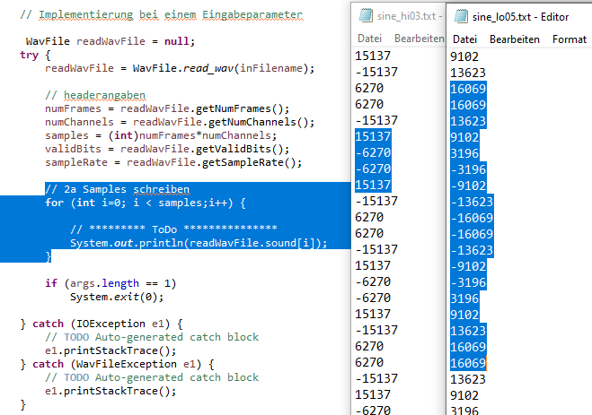
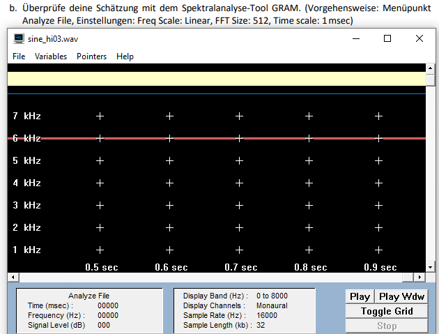
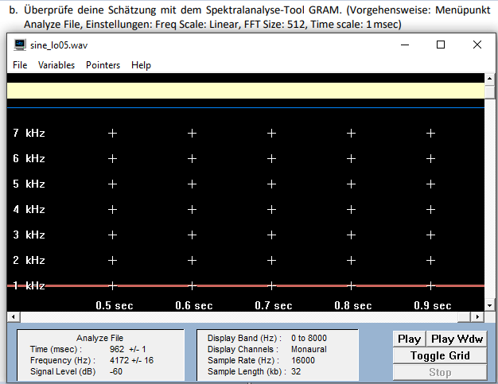

1.a) Musikaufnahmen 16bit Auflösung:
Musik_44,1kHz_stero
Sprache_8kHz_mono
1.b) Bescheibung zu unterschiedlichen Abtastfrequenzen:
Die Abtastfrequenzen sind unterschiedlich, da die Musikdatei verglichen mit der reinen Sprachdatei ein größeres Spektrum besitzt
und so bsw. mehr Frequenzhöhen und Frequenztiefen abgebildet werden können.
Der Mensch kann Frequenzen bis ca. 20kHz wahrnehmen.
Aus dem Grund werden Audioaufnahmen mit 44.1kHz bzw. 48kHz abgetastet.
Für die Sprahce hingegen ist eine Abtastfrequenzen von 8khz ausreichend.
1.c) Headerangaben
Beschreibung der Headerangaben:
- Channels: wie viele Kanäle (Mono=1Kanal, Stero=2Kanäle)
- Frames: die Anzahl an einzelnen Frames (Abtastpunkte)
- Sample Rate: wie oft wird der Audio-Pegel in einer Sekunde erfasst (Abtastrate)
- Valid Bits: wie viel Speicher f¨r einen Sample-Wert genutzt werden kann
- Bytes per sample : Speicher pro Sample in Byte (1 Byte = 8 Bit)

1.d) Bitratenberechnung
(Bitrate = Kanäle x Auflösung x Samplerate )
-Für Musik_06.wav : 2 Kanäle x 16 Bit x 44,1 kHz = 1411,2 kBit/s
-Für Sprache_06.wav : 1 Kanal x 16Bit x 8 kHz = 128 kBit/s
2.a) Samples der Sinusdateien lesbar machen (ASCII-Datei)
Sinusdateien :
sine_hi03.wav
sine_lo05.wav
Samling-Frequenz: 16 kHz
resultierenden Zahlenfolgen aus der ASCII-Datei
Bestimmung der Frequenz der Sinus-Schwingungen.
Sinus-Schwingung: sine_lo05
Um die Frequenz abzulesen muss man die Amplitude ermitteln.
Da das Sample 16.069 zweimal hintereinander folgt ist davon auszugehen, dass die Amplitude genau zwischen diesen beiden Werten liegt.
Jeder Wert in der Datei ist ein Sample also ist die Schwingungsdauer von einer Amplitude zur nächsten.
Die nächste Amplitude liegt dann auch wieder zwischen diesen beiden Werten.
Zaehlt man nun die Samles von einer zur naechsten Amplitude kommt man auf 15 + die 2 halben, also 16.
16.000 / 16 = 1000
Damit liegt die Frequenz der sine_lo05 bei 1kHz.
Sinus-Schwingung: sine_hi03
Das ganze ähnlich zur sine_hi03. Von Sample 15.137 bis 15.137 zaehlt man 3 Samples.
16.000 / 3 = ~5.333
Damit liegt die Frequenz der sine_hi03 bei ca 5,3 kHz.
2.b) Überprüfung der Schätzung aus 2a mit GRAM(Spektralanalyse-Tool)
Einstellungen Gram: Freq Scale: Linear, FFT Size: 512, Time scale: 1msec
 sine_hi03.wav = 6 kHz sine_lo05.wav = 1 kHz
2.c) Das Abtasttheorem
"Wenn ein kontinuierliches Signal mit einer oberen Grenzfrequenz von fmax mit einer Abtastrate
von mehr als 2*fmax abgetastet wird, kann man das Ursprungssignal ohne Informationsverlust aus dem
abgetasteten Signal rekonstruieren"
Malaka, R., Butz A. & Hußmann, H. (2009). Medieninformatik: Eine
Einfürung (2. Aufl.). Deutschland: Pearson Studium, S.63
Dementsprechend muss die Abtastfrequenz mindestens das doppelte der Signalfrequenz sein (fa >= 2 * fmax),
da sonst keine richtige Rekonstruktion möglich und die rekonstruierte Signalfrequenz wäre tiefer.
Der Grenzfall wäre somit wenn die Frequenz mit nur genau (fa = 2 * fmax) abgetastet werden würde.
 Skizze Grenze-Abtasttheorem
Skizze Grenze-Abtasttheorem
2.d) Aliasing erfolgreich verhindern
Um kein Aliasing zu bekommen entfernt man am Anfang, mit einem Tiefpassfilter, die zu hohen Frequenzen.
Der Tiefpassfilter filtert alle Frequenzen die größer als die Hälfte der Signalfrequenz sind.
Dann kann man den erhaltene Teil spiegeln und rekonstruieren.
Durch diese Vorbehandlung entstehen bei der späteren Abtastung kein Aliasing, wodurch es dann keine Verzerrung im Audio gibt.
2.e) Downsamling
Modifiziere wave_io dahingehend, dass vom eingelesenen Audiosignal jeder zweite Abtastwert verworfen wird und das resultierende Signal abgespeichert wird. Der Header muss natürlich entsprechend verändert werden!
Code
// 2e Downsampling
int downsample_rate = 2;
for (int i=0; i < (samples/2); i++) {
readWavFile.sound[i] = readWavFile.sound[i*downsample_rate];
}
sampleRate /= downsample_rate ;
numFrames /= downsample_rate;
2.f) Downsamling Sinusdateien
Welche Frequenzen erscheinen nach dem Down-Sampling? Was würde passieren, wenn man geeignet bandbegrenzen würde?
2.g) Downsamling Sprachdatei
Beschreibe, wie sich der Klang verändert. Erkläre, warum das passiert!
Loesung